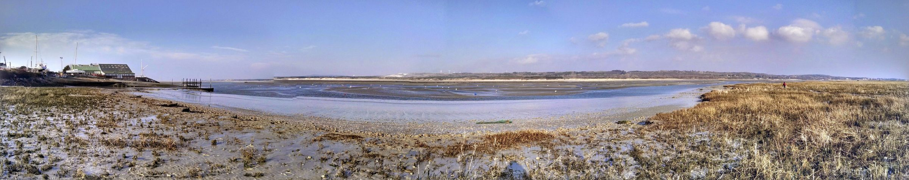
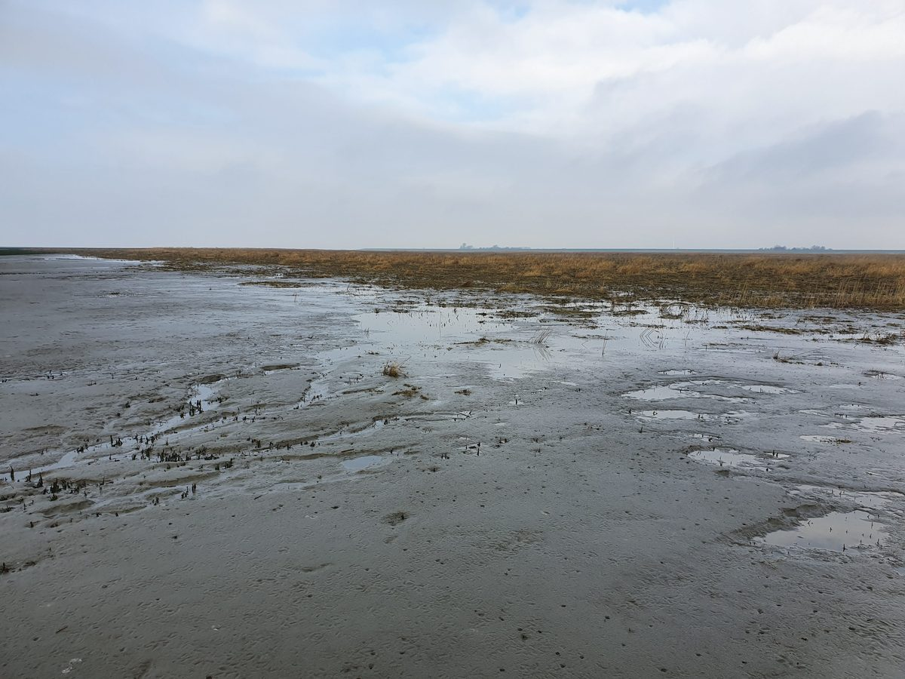
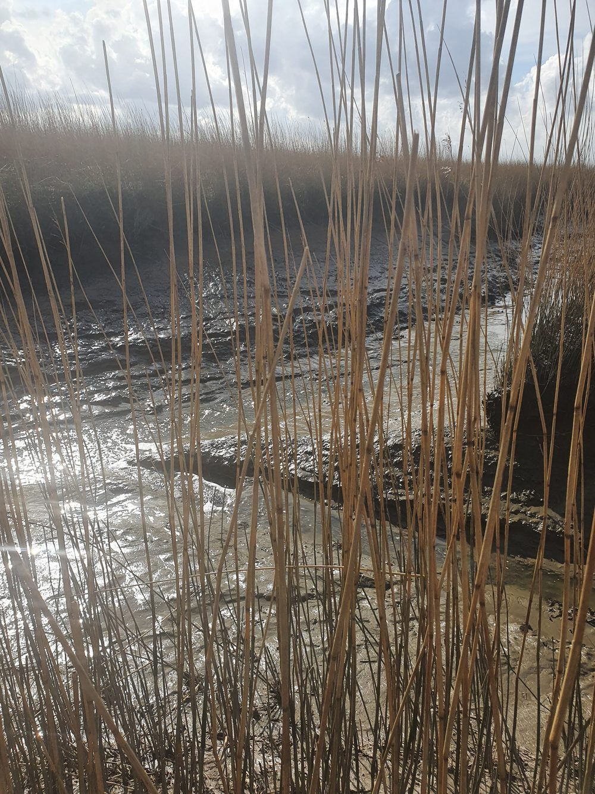
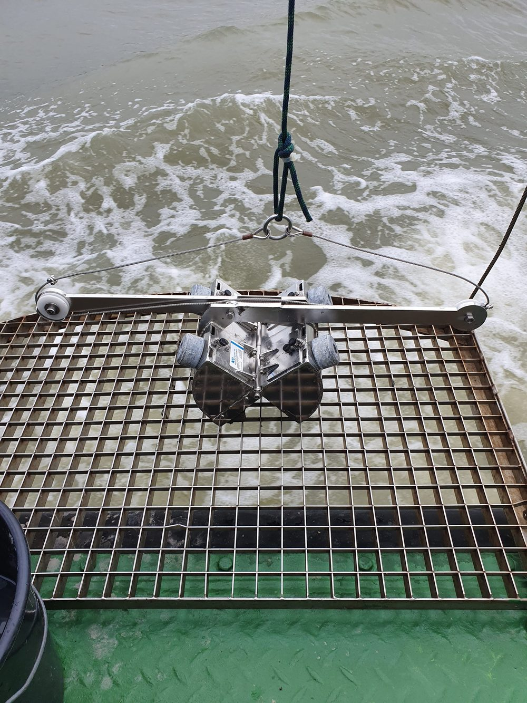
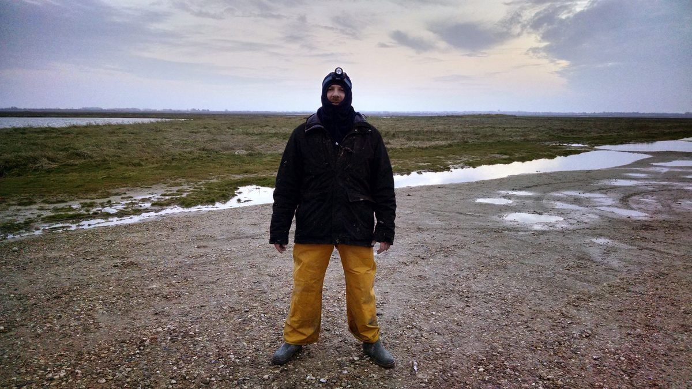
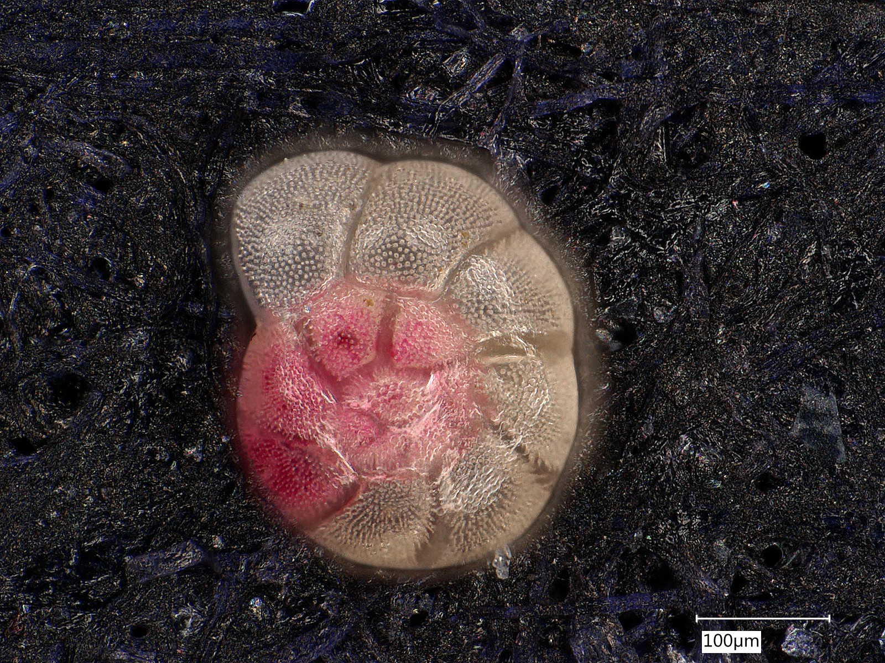

I study how coastal and marine environments change over time, using benthic foraminifera as environmental and paleoenvironmental proxies — from Quaternary-scale reconstructions to real-time biomonitoring, with a research core centred on Holocene human-impact baselines. Ten years moving between research institutions and applied environmental work in France, Germany, Switzerland and Italy.
I'm a geologist and marine ecologist working at the boundary between academic research and applied environmental practice. My core tool is the humble benthic foraminifer — a single-celled organism that, read correctly, reconstructs what a coastline looked like in the past and tracks how it's changing under global change today.
That reading has taken different forms: reconstructing centuries to millennia of coastal and harbour change from sediment cores, coordinating the development of biomonitoring software, evaluating international research funding proposals, and teaching the next generation of marine and earth scientists.
I'm currently based in Fribourg, Switzerland, and looking to bring this expertise into operational, client-facing environmental work — impact assessments, coastal monitoring, regulatory studies — while staying open to research and institutional roles where this background is equally at home.
Sediment cores are read from the surface down — the most recent layer on top, older ground beneath. This timeline follows the same logic: present-day work at the surface, foundational training in depth.
Defined ecological indicators and risk-assessment criteria for the IUCN Red List of Ecosystems methodology, applied to peatlands at a global scale.
Teaching micropalaeontology, geostatistics, pedology and mineral resources, alongside research and mission work. Continuous since 2021. Full teaching list.
Led environmental impact studies on industrially-stressed aquatic ecosystems across 15+ sites in Europe, Asia and South America. Secured and managed competitive research funding (SNSF SPARK grant, 100,000 CHF, as principal investigator).
Two-and-a-half-year fellowship from the Alexander von Humboldt Foundation, held as principal investigator — official project title "Ecological characterization of the Elbe Estuary and the applicability of foraminiferal-based transfer functions for relative sea-level reconstructions." Field results detailed under Applied Work below.
PhD in Geosciences (2013–2017), a teaching contract (ATER) at Université du Littoral Côte d'Opale — micropalaeontology, sedimentology and general geology to DEUST Techniques de la Mer et du Littoral and Licence SVT students — and a short research assignment at Lille reconstructing Holocene palaeoclimate from planktonic foraminifera, clay mineralogy and grain-size analysis. The Boulogne-sur-Mer harbour baseline is detailed under Applied Work below. Full teaching list.
Four pieces of work that moved from research question to usable tool or regulatory input. Click a card for more detail.
Sediment cores, tidal transects, and research-vessel campaigns across the North Sea, the English Channel and beyond.





Each marker shows the total number of works tied to that site — publications, conference contributions and supervised theses combined. Click a marker for the full list.

Foraminifera are single-celled marine organisms, most no bigger than a grain of sand, that build a shell from calcium carbonate or agglutinated sediment grains. They live on the seafloor by the billions, in nearly every marine and coastal environment on Earth.
Because different species tolerate different conditions — salinity, pollution, oxygen, sediment type — their presence, absence and abundance record the health of an ecosystem with unusual precision. A dye called Rose Bengal is used to stain living specimens pink, distinguishing them from empty, long-dead shells in the same sediment sample.
Their shells also fossilise well, which means the same organism that tells you about water quality today can tell you what a coastline looked like centuries ago.
36+ peer-reviewed publications and conference contributions on benthic foraminifera, coastal ecology, paleoenvironment and environmental biomonitoring — full list on this site or on ORCID. Selected activity below.